Colaboraciones


Un documental sobre la comunidad guna de Panamá, rodado en el centenario de la Revolución Dule de 1925 y contado con sus propias voces: identidad, memoria y resistencia.
Llegué a Guna Yala durante mi estancia en Panamá gracias a la beca de cooperación al desarrollo de la Universitat Politècnica de València. Una conversación con miembros de la comunidad sobre la Revolución Dule y la importancia de la preservación cultural se convirtió en el punto de partida de mi Trabajo Fin de Grado.
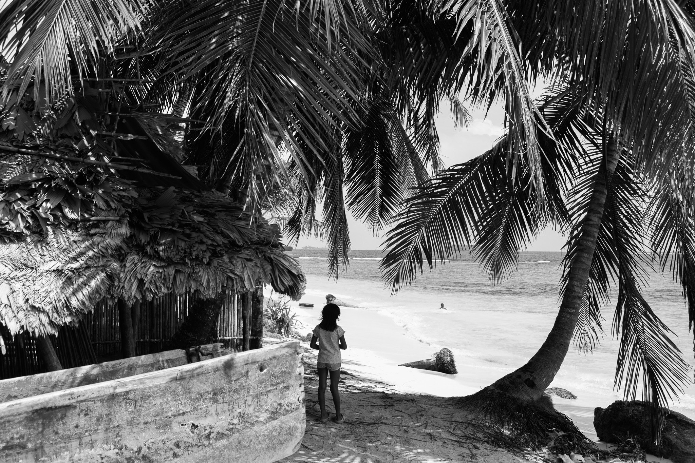
100 años de la Revolución es un documental observacional e íntimo rodado en las islas de Guna Yala, coincidiendo con el centenario de la revolución que consolidó la autonomía del pueblo guna. No pretende hablar sobre la comunidad, sino con ella: son sus propias voces las que narran la identidad cultural, la memoria colectiva y los desafíos que enfrentan hoy.
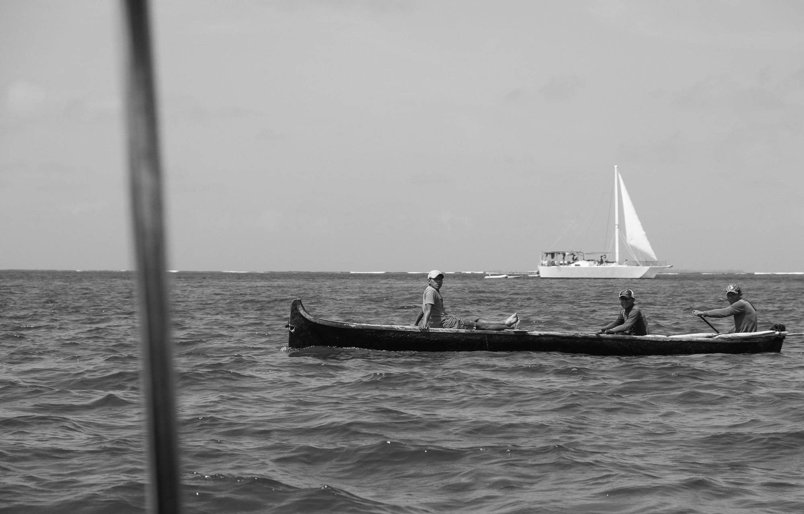
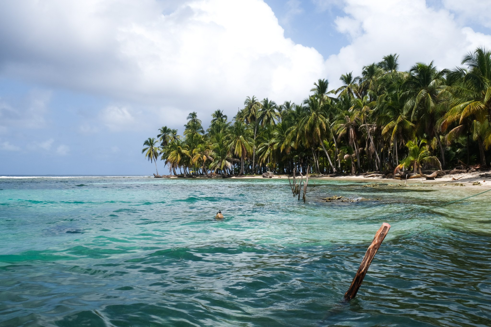
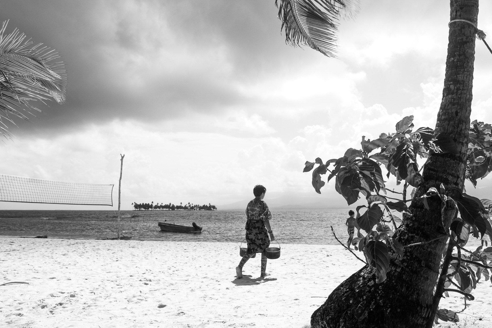
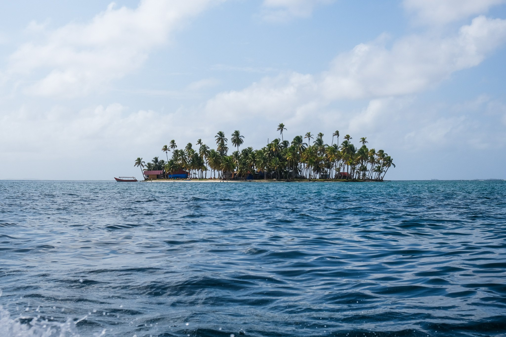
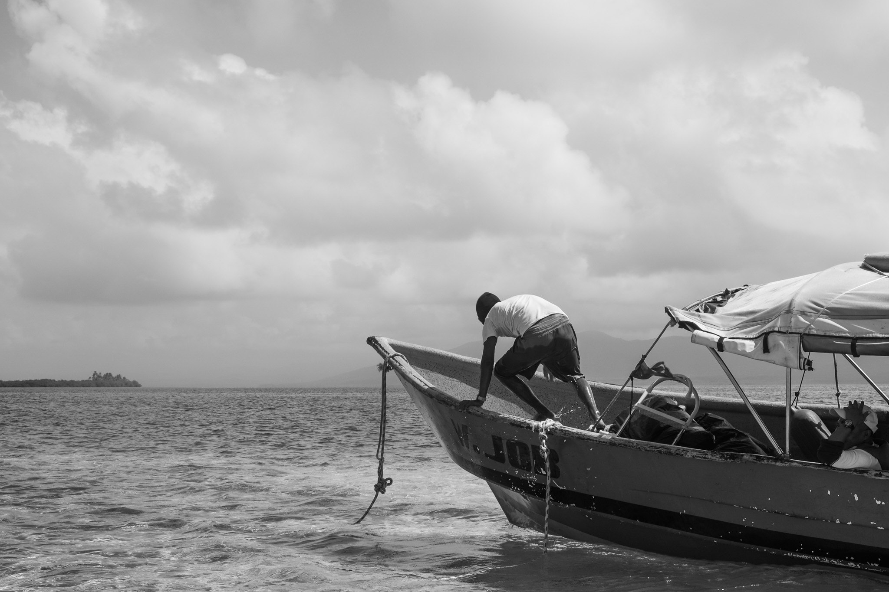
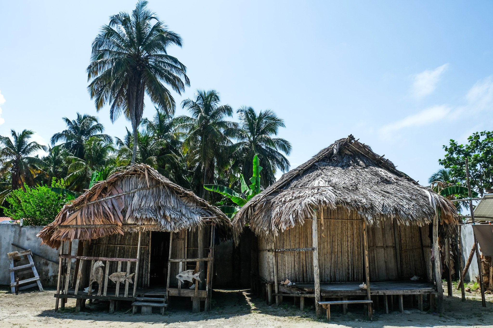
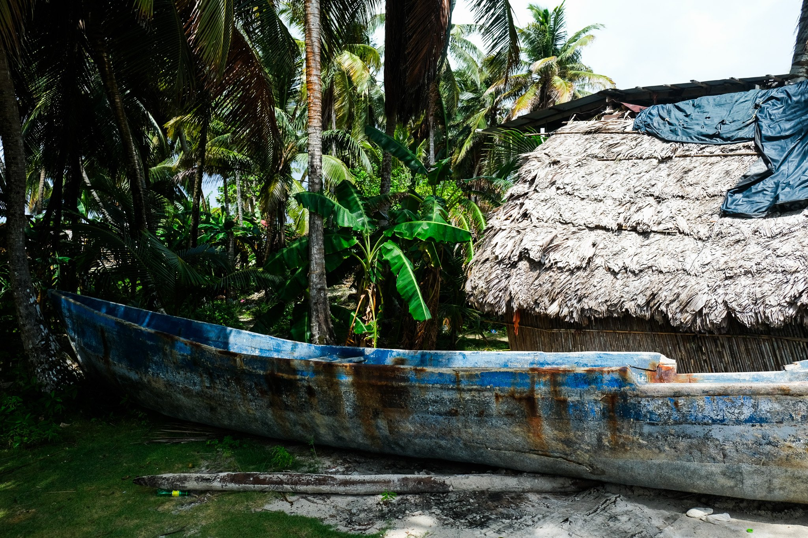
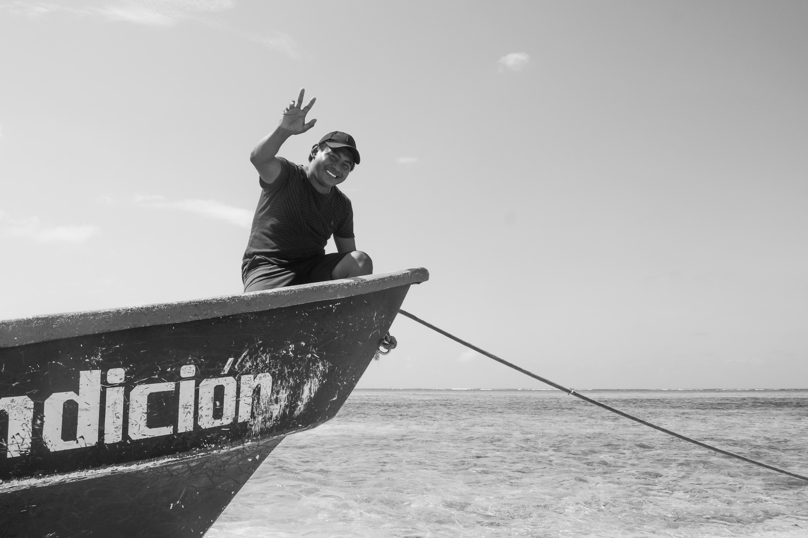
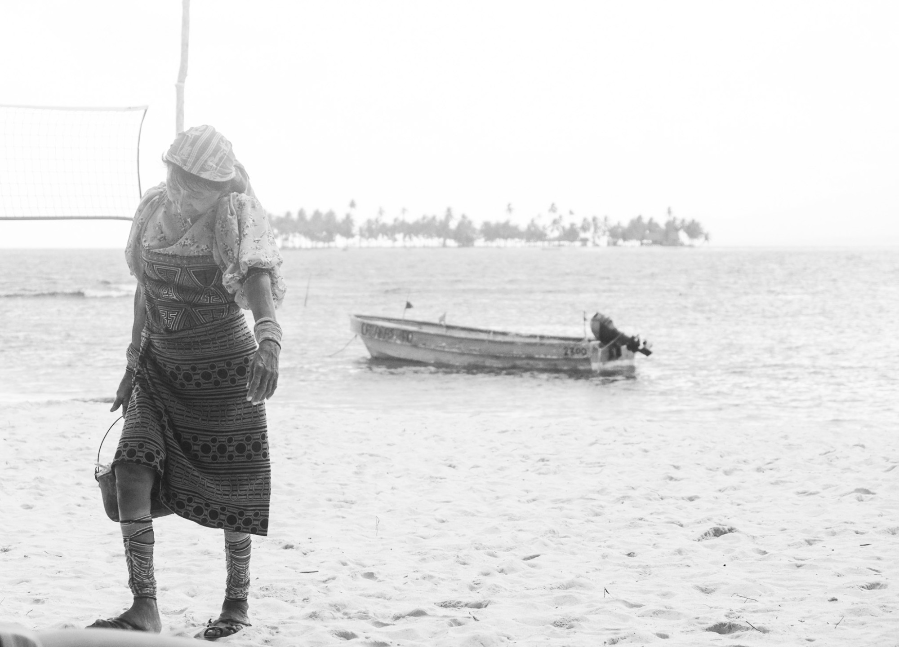
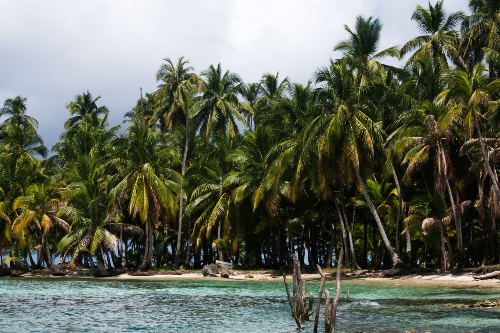
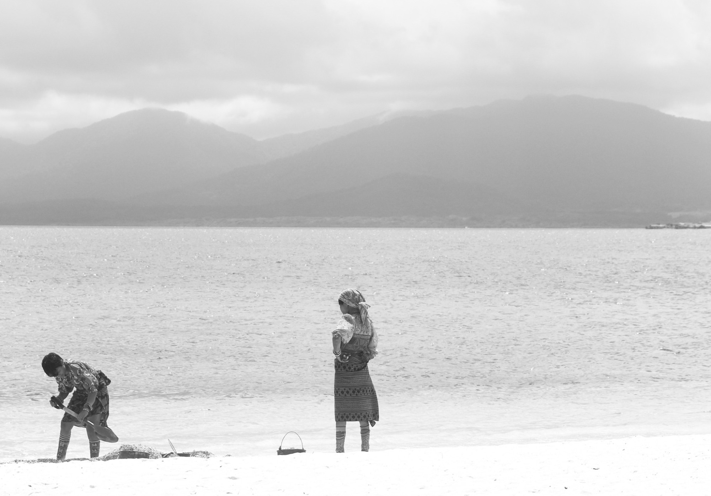
Investigación, rodaje, entrevistas, montaje, etalonaje, diseño sonoro y grafismos son trabajo propio, realizado en solitario durante mi convivencia con familias de Isla Ina e Isla Morrodub.
Banda sonora original de Juan González Poveda.
Con la colaboración del Museo de la Mola y la documentación gráfica del antropólogo James Howe.